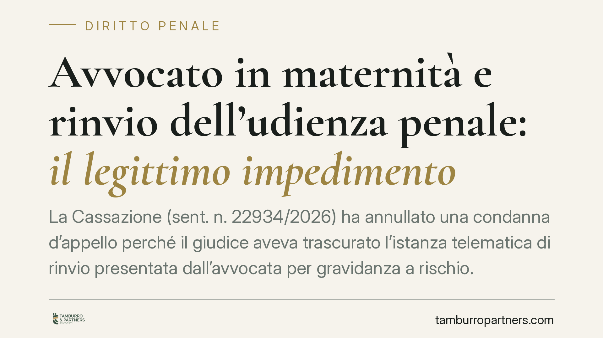

Avvocato in maternità e rinvio dell'udienza penale: il legittimo impedimento
La Cassazione (sent. n. 22934/2026) ha annullato una condanna d'appello perché il giudice aveva trascurato l'istanza telematica di rinvio presentata dall'avvocata per gravidanza a rischio. La pronuncia chiarisce i confini del legittimo impedimento del difensore e del diritto alla difesa tecnica, con ricadute concrete su chi gestisce udienze e scadenze processuali.

Il caso
Un'avvocata, nominata difensore in un processo penale, presenta per via telematica istanza di rinvio dell'udienza d'appello allegando una gravidanza a rischio. Il giudice non esamina l'istanza e procede, giungendo alla conferma della condanna. La difesa ricorre in Cassazione.
La Prima Sezione Penale annulla la decisione: ignorare una richiesta di rinvio fondata su una condizione di maternità tutelata dalla legge si traduce nella violazione del diritto di difesa tecnica, cioè il diritto dell'imputato a essere assistito da un difensore effettivamente presente.
Inquadramento normativo
Il riferimento è l'art. 420-ter, comma 5-bis, del codice di procedura penale. La norma prevede un'ipotesi specifica di rinvio: quando il difensore si trova in condizione di gravidanza o ha partorito da poco, l'udienza va rinviata se l'assenza dipende da tale situazione. È una forma di legittimo impedimento, ossia una causa riconosciuta dalla legge che giustifica l'assenza e obbliga il giudice a differire l'udienza.
Non si tratta di una facoltà discrezionale. Verificati i presupposti, il rinvio è dovuto. Il giudice conserva il potere-dovere di controllare la serietà e la documentazione dell'impedimento, ma non può semplicemente ometterne l'esame.
La Cassazione collega questa garanzia al diritto di difesa tutelato dall'art. 24 della Costituzione. L'assistenza del difensore non è un adempimento formale: deve essere reale. Un processo celebrato senza considerare l'impedimento legittimo del difensore è viziato, e la sentenza che ne deriva è nulla.
Perché la pronuncia conta
Il punto decisivo è l'omissione. Il giudice d'appello non ha rigettato l'istanza con motivazione: l'ha trascurata. Questo profilo è centrale, perché distingue due situazioni diverse.
Un conto è valutare l'istanza e respingerla ritenendo l'impedimento non documentato o non attuale: in quel caso esiste una decisione motivata, sindacabile nel merito. Altro conto è procedere senza alcuna delibazione, come se l'istanza non esistesse. In questa seconda ipotesi la violazione è radicale e colpisce la stessa validità del giudizio.
La trasmissione telematica dell'istanza non riduce l'onere del giudice di esaminarla. Il deposito elettronico, ormai ordinario, impone anzi maggiore attenzione nel monitoraggio del fascicolo informatico prima dell'udienza.
Implicazioni pratiche
Per l'imputato, la pronuncia rafforza una tutela: se il difensore è legittimamente impedito e l'udienza viene celebrata ugualmente, la condanna può essere annullata.
Per il difensore, la decisione conferma che la condizione di maternità rientra tra gli impedimenti tipizzati, ma ribadisce l'importanza della tempestività e della documentazione. L'istanza va presentata appena possibile e corredata di certificazione medica idonea, specie quando si invoca la gravidanza a rischio.
Per chi organizza l'attività di studio, emerge la necessità di procedure interne che evitino sovrapposizioni e che garantiscano il deposito e il riscontro delle istanze di rinvio entro i termini utili.
Cosa fare in concreto
- Deposita l'istanza di rinvio per legittimo impedimento con il massimo anticipo possibile rispetto all'udienza, mai a ridosso.
- Allega sempre documentazione medica specifica e aggiornata, che indichi la condizione e la sua incidenza sulla capacità di partecipare.
- Conserva la ricevuta di deposito telematico e verifica che l'istanza risulti caricata nel fascicolo del procedimento corretto.
- Richiama espressamente l'art. 420-ter, comma 5-bis, c.p.p. nel corpo dell'istanza, così da qualificare con precisione l'impedimento.
- In caso di udienza celebrata nonostante l'istanza, consigliamo di far verbalizzare l'omesso esame e di valutare subito l'impugnazione.
Nota conclusiva
La sentenza non introduce un diritto nuovo, ma ricorda che le garanzie già scritte nel codice vanno applicate, non aggirate. L'esame dell'istanza di rinvio è un passaggio obbligato: trascurarlo non è un'irregolarità minore, ma un vizio che compromette il processo.
*Contributo informativo a cura di Tamburro & Partners - Avv. Giuseppe Tamburro. Non costituisce parere legale.*
Ogni condominio ha una storia a sé.
Se gestisci un'amministrazione e vuoi un confronto su una specifica questione condominiale, scrivi allo studio. Ti rispondiamo entro un giorno lavorativo.